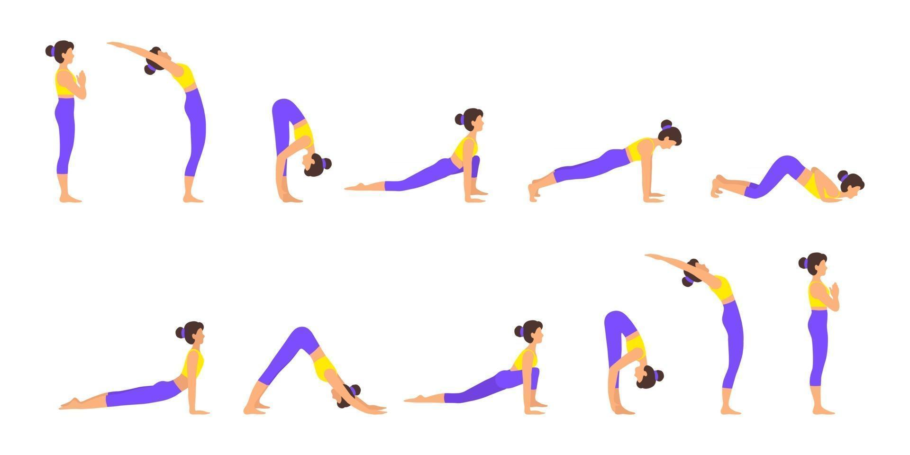

Surya Namaskar is a traditional sequence of 12 poses performed in a flowing manner. It’s a complete workout that combines stretching, strengthening, and breathing. Beginners can start slowly, practicing 3–4 rounds daily, and gradually increase.

Check out this YouTube video on Surya Namaskar! If you want to know more about various Yoga Traditional Styles, refer Types of Yoga: A Guide to the Different Styles.